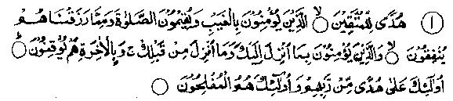
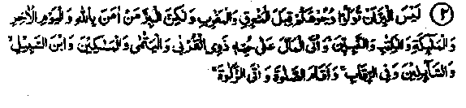
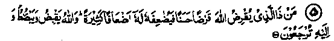
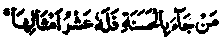
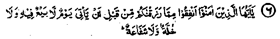
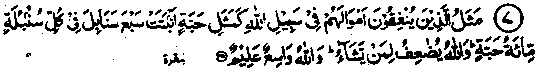

Chapter One
Virtues and Rewards of Spending for the Cause of Allah
The Holy Qur’an and the Ahadith of Rasulullah Sallallaho alaihe wasallam, the greatest of mankind, contain so many exhortations to give away Sadaqah that, after going through them, one cannot but conclude that money is not to be held back at all and that it is meant only for spending for the cause of Allah. The commandments and instructions on this subject are so numerous that it- is difficult to collect even a tenth of them. In my usual way, I am quoting below, by way of example, a few Ayaat of the Holy Qur’an and some Ahadith with their translation.
Section (a)
Ayaat
1. Some Ayaat concerning spending in charity

1. (The Glorious Qur’an) In it there is guidance for those who fear Allah and believe in things not visible; they establish Salaat and spend from what We have bestowed on them; and they believe in what has been sent down to you and sent down before you; and they are certain of the Akhirah. They depend on the guidance from their Lord; they are the successful. (al-Baqarah: 2-5)
Note: These Ayaat contain several subjects, all of which need close consideration:-
(a) The Qur’an is a guidance to those who fear Allah Ta'ala Shanohu. Obviously, the one who does not fear his Lord, nor considers the Lord as his Master, and the one who does not know his Creator, cannot see the path indicated by the Glorious Qur’an. He alone can see the path who has the capability of seeing. Similarly, a person whose heart is devoid of the fear of Allah has no regard for His commandments.
(b) ‘To establish Salaat’ is to perform it with full concentration, following the prescribed manner and fulfilling the necessary conditions. These have been fully dealt with in my booklet on the 'Virtues of Salaat,' wherein I have quoted a saying of Ibne Abbas Radhiallaho anho to the effect that: The establishment of Salaat’ depends on correct performance of Ruku' and Sajdah, whole-hearted concentration and humility towards Allah. According to Qatadah Rahmatullah alaihe, perfection in Salaat can be achieved by observing it at its proper time, by proper ‘Wudhu' (ablution), and by ‘Ruku’ and ‘Sajdah’ in the proper way.
(c) The highest achievement of man is to attain Falaah’. The term Falaah implies success and happiness, both in spiritual and worldly affairs.
Imaam Raghib Rahmatullah alaihe has written that ‘Falaah’ in the worldly sense means attainment of excellence in certain aspects of worldly life, in respect of lasting satisfaction, contentment and honour. ‘Falaah’ in the life of Akhirah consists in four things:
1. Eternal life.
2. Riches that have no shadow of poverty.
3. Honour with no trace of disgrace.
4. Knowledge with no taint of ignorance.
In the case of absolute ‘Falaah’, success is implied in its highest degree, both in spiritual and material life.

2. It is not righteousness that you turn your faces to the East or West; but the righteous is he who believes in Allah and the Last Day and the Angels, and the Scripture and the Ambiya and gives his wealth for the love of Him to .kinsfolk and to orphans and the destitute and the wayfarer and to those who ask (in need) and to set slaves free; and observes Salaat properly; and pays Zakaat. (These are worthwhile attainments). (al-Baqarah: 177)
(The Ayat mentions a few more qualities of the righteous and in conclusion, asserts: "Such are they who are truly sincere. Such are the people who fear Allah").
Note: Qatadah Rahmatullah alaihe says that the Jews used to turn their faces to the West while offering their prayers and the Christians faced the East; so this Ayat was sent down concerning their practice. Several other Ulama have expressed the same opinion (Durre Manthur). Imaam Jassaas Rahmatullah alaihe has said that this Ayat was sent down to refute the objections of the Jews and the Christians against the change of ‘Qiblah’ i.e. from Bait-ul-Muqaddas to Ka'bah. Allah Subhanahu wa Ta'ala has, in this Ayat stressed the fact that virtue lies in obedience to Allah Ta'ala, without which the turning to the East or West is meaningless (Ahkamul-Qur’an). Spending for the cause of Allah means that, in all cases, money must be spent only to seek the pleasure and love of Allah, and not for getting name and fame for one-self, in which case the spending will not count as an act of virtue. It will rather become a sin instead of being a virtue. Rasulullah Sallallaho alaihe wasallam has said that Haq Ta'ala Shanohu does not look at your faces and your wealth (how much spent). He, rather, looks at your deeds and your hearts (the motives behind your deeds). (Mishkaat). Another Hadith reports Rasulullah Sallallaho alaihe wasallam as saying, "The thing I fear most for you (the Ummah) is the minor ‘Shirk’. On being asked what the minor ‘Shirk’ was, he replied, "To do something for the sake of show". Repeated warnings have been given in the Ahadith against spending for the sake of displaying one’s generosity.
The translation given above indicates that spending of money should be motivated by love for Allah. Some Ulama have interpreted the Ayat as follows:
Spending of money should be accompanied by a feeling of love for spending i.e. one should be delighted to give away things as Sadaqah, should have no second thoughts, nor regret having spent money, nor fear from want, nor blame oneself for. spending it lavishly (Ahkamul Qur’an). Many other Ulama have given a different interpretation. They say that the Ayat refers to spending for the cause of Allah while one still needs and loves money. A Hadith says that someone asked Rasulullah Sallallaho alaihe wasallam, "What is meant by spending money while one loves it; for everybody loves money?" Rasulullah Sallallaho alaihe wasallam replied, "It means that you should spend money while you are conscious of your own needs, fear from want and neediness ani fed aftsid lest you should need it at a time during the long years of your life lying ahead". Another Hadith says that the best Sadaqah is to spend at the time when you are in prod health, hoping to live long. Do not go on postponing Sadaqah till you find yourself on the death-bed, with little or no hope of survived, at which juncture, you may begin to give away your wealth saying, ‘So much to sb-amd-eo and so much for such and such cause, though it now belongs to your heirs. (Durre Manthur). When the hope for life vanishes, feeling for personal needs is no longer there and, With the apprehension of all the property going to your heirs, you begin to distribute it among Masjids and Madrasahs!
So long as the feeling of one’s own neediness was uppermost, the will to give as Sadaqah was absent Therefore the ‘Shariah’ has ordered that such last-moment directions for giving things in Sadaqah or to non-heirs should be limited to a maximum of one third of the total property. Thus if the total property has been given away at the time of death, only one third of it can be validly disposed off according to such a ‘will’ of the deceased. The above Ayat specifically emphasizes spending on the orphans and the destitute while Zakaat has been mentioned separately, at the end of the Ayat
This shows that spending on the things specified therein has to be done from the property left with a person after payment of Zakaat This point will be explained later under Hadith No. 1.
3. Spend your wealth for the cause of Allah, and make not your hands contribute to your destruction; and do good. Lo! Allah loves those who are beneficent (al-Baqarah: 195)
Note: According to Huzaifah Radhiallaho anho, the command "Do not contribute to your own destruction" means giving up Sadaqah for fear of becoming poor. Ibne-Abbas Radhiallaho anho has said, "To get killed in the path of Allah, is not ruining oneself: in fact, ruination lies in withholding the expenditure on Sadaqah". Dhahhaak Bin Jubair Rahmatullah alaihe has said that the Ansaar used to spend in the path of Allah and also give things in Sadaqah. Once, in a year of famine, they changed their minds and stopped this noble practice. On that occasion this Ayat was revealed. Aslam Rahmatullah alaihe has said that he was one of those who participated in the battle of Constantinople. A large force of the enemy advanced to oppose them. A man from their side rushed alone into the enemy lines. Upon this, some of the Muslims started shouting that the men had blindly invited his ruination and they recited this particular Ayat in support of their contention. Abu Ayyub Ansaari Radhiallaho anho, who was also in the field, got up and said that the action of that man was not self-ruination at all; he said that the Ayat of the Qur’an being quoted by some people referred to the Ansaar. He explained that Ansaar quietly took a decision among themselves that the time had come for them to engage themselves in improving their lands and farms, etc; in the belief that, by the grace of Allah Ta'ala, Islam by then had become predominant and many people besides the Ansaar had joined the ranks of its supporters and helpers and, so the Ansaar could turn to their fields, plantations, etc, which were in ruin due to neglect and lack of care. At that juncture, the Ayat in question was revealed in order to admonish them that it would be self-ruination if the Ansaar gave up Jehaad for the sake of improving their properties. (Durre Manthur).
4. (People) ask you what they should spend (as Sadaqah) "Tell (them) what they can spare". (i.e. what is in excess of their requirements). (al-Baqarah: 219)
Note: Wealth is meant to be spent; whatever is left over, after meeting personal requirements, should be spent as Sadaqah. Ibne Abbas Radhiallaho anho has said that, after meeting the requirements of one’s family the balance becomes ‘Afv’ which means that it is to be spent as Sadaqah. Abu Umamah Radhiallaho anho has reported Rasulullah Sallallaho alaihe wasallam as saying, "O men, give what you can spare for charity, this is good for you; if you hold it back, it will be bad for you. You are not to blame for keeping back just enough for your own requirements; begin by spending on those who are dependant on you. The upper hand (which gives) is better than the lower hand (which is stretched out for accepting alms)". Ataa Rahmatullah alaihe is quoted as having said that ‘Afv’ means wealth in excess of actual needs. (Durre Manthur). Abu Sae'ed Khudri Radhiallaho anho has said that once Rasulullah Sal-lallaho alaihe Wasallam said that when a person has an extra conveyance he should give it to someone who has none, and whoever has provision in excess should give the excess to those who do not have any. Rasulullah Sallallaho alaihe wasallam said this so emphatically that we thought no one would have any right over his own property in excess of his actual needs. (Abu Dawood). In fact the highest virtue lies only in giving away everything that is over and above one’s legitimate requirements; nothing is to be hoarded. Certain Ulama have said that ‘Afv’ means "What is convenient”; one should spend as Sadaqah what can be spared with convenience and ease, so that no hardship or distress is caused to oneself afterwards. Also that no dependant should be deprived of his or her legitimate rights (which is a responsibility of the spender), due to which the latter may get into trouble on the Day of Judgment. It is narrated that Ibne Abbas Radhiallaho anho said, "Some people used to give so much Sadaqah that nothing would be left with themselves, even for eating, and they would be compelled to look for Sadaqah from others. It was for this reason that the above Ayat was revealed". Abu Saeed Khudri Radhiallaho anho has said that Rasulullah Sallallaho alaihe wasallam, seeing the very poor condition of a person just arrived in the Masjid, asked the people to give him clothes as Sadaqah. Plenty of these were contributed; Rasulullah Sallallaho alaihe wasallam gave two garments out of these to the poor man. Later, once again Rasulullah Sallallaho alaihe wasallam persuaded people to donate as Sadaqah. That poor man also gave one garment out of his two, whereupon Rasulullah Sallallaho alaihe wasallam showed his displeasure and returned the piece to him. (Durre Manthur). The Glorious Qur’an does invite us to give in charity, in spite of our own requirements, but this is for such people who can do it cheerfully, because the importance of ‘Akhirah’ prevails over worldly requirements in their minds. This particular point is dealt with in detail under Ayat given at serial No. 28.

5. Who is it that will lend to Allah a goodly loan, so that He may give it increase manifold? (Do not fear poverty) Allah straitens and enlarges (your provision), and to Him you will return. (al-Baqarah: 245)
Note: The act of spending for the cause of Allah has been interpreted as advancing loan to Allah Ta'ala, which means that, just as the return of a loan is obligatory, the recompense and reward for spending in charity is a certainty. That is why Sadaqah has been termed as loan. Umar Radhiallaho anho has stated that giving a loan to Allah Ta'ala means spending in charity. Ibne Mas‘ood Radhiallaho anho has said that, when the above Ayat was revealed, Abu Dahdah Ansaari Radhiallaho anho came to Rasulullah Sallallaho alaihe wasallam and submitted, "O Rasulullah, does Allah Jalla Shanohu desire a loan from us?" Rasulullah Sallallaho alaihe wasallam replied, "Certainly so". He then said, "Please give me your hand" (for making a promise). Rasulullah Sallallaho alaihe wasallam stretched out his hand towards him and Abu Dahdah Radhiallaho anho, taking it in his own hand as a gesture of a vow, said that he was giving his garden to Allah Ta'ala as a loan. That garden had six hundred date-palms and his wife and children were living in it. Abu Dahdah Radhiallaho anho went to the garden, called his wife Umme Dahdah Radhiallaho anha and told her that they had to leave the garden as it had been given away to their 'Lord' (Allah Ta'ala). Another Hadith by Abu Hurairah Radhiallaho anho says that Rasulullah Sallallaho alaihe wasallam distributed that garden among some orphans. Still another Hadith says that when the sacred Ayat was revealed, saying:

Whoever earned a single virtue would receive ten times the reward for it, Rasulullah Sallallaho alaihe wasallam made a Dua, "O, Allah! compensate my ‘Ummah’ even more than that". As a result this Ayat was revealed:-
Rasulullah Sallallaho alaihe wasallam again implored Allah for a further increase. Thereupon the Ayat which has been explained at serial No. 7 below, was revealed.
"Rasulullah Sallallaho alaihe wasallam again made supplication saying, "O Allah, increase the reward of my Ummah". Thereupon the Ayat was revealed:
That whoever is steadfast will receive a full return, which will be boundless. (az-Zumar: 19).
Another Hadith says that an angel calls out, "Whoever offers a loan today will receive a full compensation tomorrow". Another Hadith says that Allah Jalla Shanohu proclaims, "O man, entrust your treasures to me for safe custody; none of these will catch fire, nor sink, nor be stolen; you will receive these back from Me at the time when your need for them will be the greatest". (Durre Manthur)

6. O you who believe! Spend, out of what We have provided for you before the Day comes when there would be no bargaining, nor friendship, nor intercession (without Allah’s permission). (al-Baqarah:254)
Note: It means that there shall be no selling or buying on that Day to enable you to buy virtues from others, nor would there be any friend to intercede or entreat on your behalf. In short, all means of help from any source shall cease. If anything is to be done for that Day, now is the time to do it and to sow the seed; that Day shall be the day of harvest. Whatever is sown shall be reaped, whether it be grain or flower, thorn or firewood! It is a matter for all to ponder and ,to examine what each one is sowing?

7. The likeness of those who spend their wealth in Allah’s way (for good deeds) is as the likeness of a grain which grows seven ears, in every ear a hundred grains. Allah gives manifold increase to whom He wills. Allah is All-Embracing, and All-Knowing (He knows the motive for which wealth is spent), (al-Baqarah: 261)
Note: Ahadith say that there are six categories of deeds and four categories of men. The six types of deeds include two that are obligatory and two bring equal compensation, the fifth one brings ten times reward and the sixth may bring seven hundred times reward in return. The obligatory two are that, if a person dies without committing any ‘Shirk’ he shall go to ‘Jannah’ and if he is guilty of ‘Shirk’ he shall land himself in ‘Jahannam’. Those at equal compensation are: if a person intends to do a good deed but is unable to accomplish it, he shall receive a single virtue as a reward for making the good intention. Similarly, if a person commits a sin, his punishment shall correspond to a single sin. When a person actually accomplishes a single good deed, his reward shall be tenfold, whereas, if he spends for the cause of Allah, his return shall be seven hundred times the value of the wealth spent.
The four categories of men referred to are as follows:
1. The one who receives ample provisions in this life as well as in the ‘Akhirah’.
2. The one prosperous in this life but poor and miserable in the ‘Akhirah’.
3. The one who suffers hardships in this life but shall flourish in the ‘Akhirah’.
4. The one who is miserable in this life as well as in the ‘Akhirah’. (Kanzul Ummal).
His misery is due to poverty here, and his bad deeds lead him to sufferings in the ‘Akhirah’, so that both his lives are ruined. Abu Hurairah Radhiallaho anho reports Rasulullah Sallallaho alaihe wasallam as saying that whoever gives in charity the equivalent to a date that is a part of lawful possession and not unlawful; Allah nourishes that date as you nourish your colt, to such an extent that your provision grows up to the dimensions of a mountain. Haq Ta'ala Shanohu accepts only pure and flawless things. Allah Ta'ala increases the reward of this simple virtue to a size larger than that of mount Uhad, which is the highest mountain near Madinah. This indicates that the reward for a single virtue would grow far beyond the seven hundred times limit mentioned above. Another Hadith says that when the Ayat regarding the seven hundred times reward was revealed, Rasulullah Sallallaho alaihe wasallam made a Du‘aa for a further increase of the reward, upon which the Ayat given at No. 5 was revealed. (Bayan-al-Qur'an). This means that this particular Ayat was sent down earlier than the one given at No. 5. The subject of another Hadith is contrary to the discussion given under Ayat No. 5.